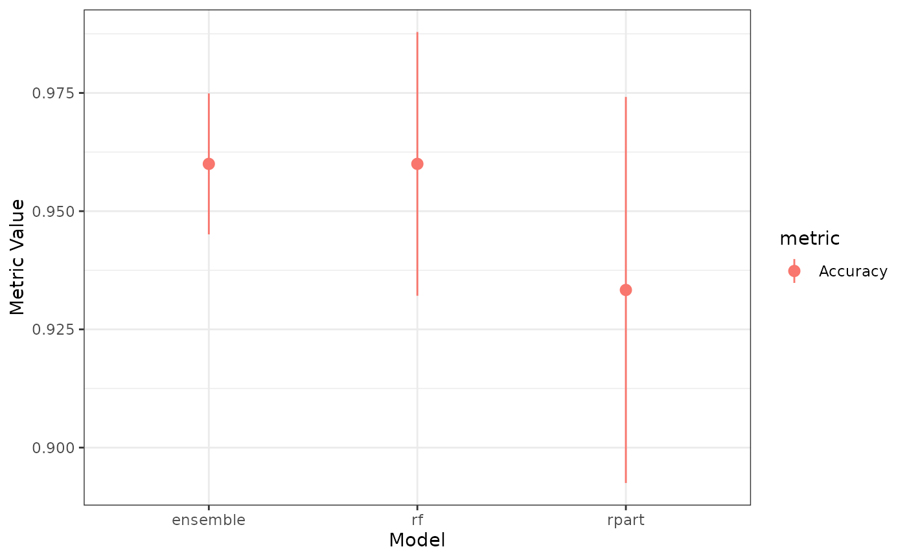
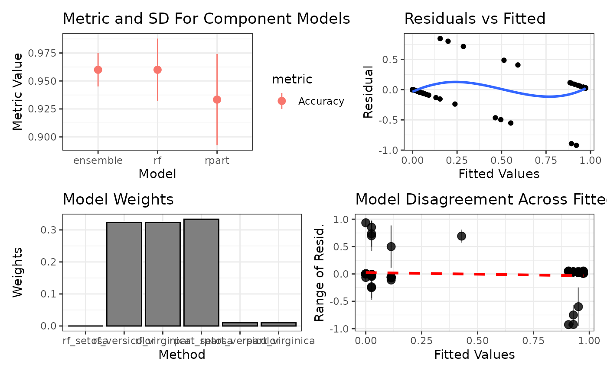

Version 4.0 New Features
Zach Deane-Mayer
2024-08-17
Source:vignettes/Version-4.0-New-Features.Rmd
Version-4.0-New-Features.RmdcaretEnsemble 4.0.0 introduces many new features! Let’s quickly go over them.
Multiclass support
caretEnsemble now fully supports multiclass problems:
model_list <- caretEnsemble::caretList(
x = iris[, 1L:4L],
y = iris[, 5L],
methodList = c("rpart", "rf")
)
print(summary(model_list))
#> The following models were ensembled: rpart, rf
#>
#> Model accuracy:
#> model_name metric value sd
#> <char> <char> <num> <num>
#> 1: rpart Accuracy 0.9333333 0.04082483
#> 2: rf Accuracy 0.9600000 0.02788867Greedy Optimizer in caretEnsemble
The new version uses a greedy optimizer by default, ensuring the ensemble is never worse than the worst single model:
ens <- caretEnsemble::caretEnsemble(model_list)
print(summary(ens))
#> The following models were ensembled: rpart, rf
#>
#> Model Importance:
#> rpart_setosa rpart_versicolor rpart_virginica rf_setosa
#> 0.2937 0.0101 0.0122 0.0000
#> rf_versicolor rf_virginica
#> 0.3303 0.3537
#>
#> Model accuracy:
#> model_name metric value sd
#> <char> <char> <num> <num>
#> 1: ensemble Accuracy 0.9600000 0.01490712
#> 2: rpart Accuracy 0.9333333 0.04082483
#> 3: rf Accuracy 0.9600000 0.02788867Enhanced S3 Methods
caretStack (and by extension, caretEnsemble) now supports various S3 methods:
print(ens)
#> The following models were ensembled: rpart, rf
#>
#> caret::train model:
#> Greedy Mean Squared Error Optimizer
#>
#> No pre-processing
#> Resampling: Cross-Validated (5 fold)
#> Summary of sample sizes: 120, 120, 120, 120, 120
#> Resampling results:
#>
#> Accuracy Kappa
#> 0.96 0.94
#>
#> Tuning parameter 'max_iter' was held constant at a value of 100
#>
#> Final model:
#> Greedy MSE
#> RMSE: 0.1476488
#> Weights:
#> setosa versicolor virginica
#> rpart_setosa 1 0.00 0.00
#> rpart_versicolor 0 0.00 0.03
#> rpart_virginica 0 0.03 0.00
#> rf_setosa 0 0.00 0.00
#> rf_versicolor 0 0.97 0.00
#> rf_virginica 0 0.00 0.97
print(summary(ens))
#> The following models were ensembled: rpart, rf
#>
#> Model Importance:
#> rpart_setosa rpart_versicolor rpart_virginica rf_setosa
#> 0.2579 0.0113 0.0113 0.0000
#> rf_versicolor rf_virginica
#> 0.3490 0.3705
#>
#> Model accuracy:
#> model_name metric value sd
#> <char> <char> <num> <num>
#> 1: ensemble Accuracy 0.9600000 0.01490712
#> 2: rpart Accuracy 0.9333333 0.04082483
#> 3: rf Accuracy 0.9600000 0.02788867
plot(ens)
ggplot2::autoplot(ens)
Improved Default trainControl
A new default trainControl constructor makes it easier to build appropriate controls for caretLists. These controls include explicit indexes based on the target, return stacked predictions, and use probability estimates for classification models.
class_control <- caretEnsemble::defaultControl(iris$Species)
print(ls(class_control))
#> [1] "adaptive" "allowParallel" "classProbs"
#> [4] "fixedWindow" "horizon" "index"
#> [7] "indexFinal" "indexOut" "initialWindow"
#> [10] "method" "number" "p"
#> [13] "predictionBounds" "preProcOptions" "repeats"
#> [16] "returnData" "returnResamp" "sampling"
#> [19] "savePredictions" "search" "seeds"
#> [22] "selectionFunction" "skip" "summaryFunction"
#> [25] "timingSamps" "trim" "verboseIter"
reg_control <- caretEnsemble::defaultControl(iris$Sepal.Length)
print(ls(reg_control))
#> [1] "adaptive" "allowParallel" "classProbs"
#> [4] "fixedWindow" "horizon" "index"
#> [7] "indexFinal" "indexOut" "initialWindow"
#> [10] "method" "number" "p"
#> [13] "predictionBounds" "preProcOptions" "repeats"
#> [16] "returnData" "returnResamp" "sampling"
#> [19] "savePredictions" "search" "seeds"
#> [22] "selectionFunction" "skip" "summaryFunction"
#> [25] "timingSamps" "trim" "verboseIter"Mixed Resampling Strategies
Models with different resampling strategies can now be ensembled:
y <- iris[, 1L]
x <- iris[, 2L:3L]
flex_list <- caretEnsemble::caretList(
x = x,
y = y,
methodList = c("rpart", "rf"),
trControl = caretEnsemble::defaultControl(y, number = 3L)
)
#> note: only 1 unique complexity parameters in default grid. Truncating the grid to 1 .
flex_list$glm_boot <- caret::train(
x = x,
y = y,
method = "glm",
trControl = caretEnsemble::defaultControl(y, method = "boot", number = 25L)
)
flex_ens <- caretEnsemble::caretEnsemble(flex_list)
print(flex_ens)
#> The following models were ensembled: rpart, rf, glm_boot
#>
#> caret::train model:
#> Greedy Mean Squared Error Optimizer
#>
#> No pre-processing
#> Resampling: Cross-Validated (5 fold)
#> Summary of sample sizes: 120, 121, 120, 119, 120
#> Resampling results:
#>
#> RMSE Rsquared MAE
#> 0.3213821 0.8504616 0.2652383
#>
#> Tuning parameter 'max_iter' was held constant at a value of 100
#>
#> Final model:
#> Greedy MSE
#> RMSE: 0.3204963
#> Weights:
#> [,1]
#> rpart 0.00
#> rf 0.51
#> glm_boot 0.49Mixed Model Types
caretEnsemble now allows ensembling of mixed lists of classification and regression models:
X <- iris[, 1L:4L]
target_class <- iris[, 5L]
target_reg <- as.integer(iris[, 5L] == "virginica")
ctrl_class <- caretEnsemble::defaultControl(target_class)
ctrl_reg <- caretEnsemble::defaultControl(target_reg)
model_class <- caret::train(iris[, 1L:4L], target_class, method = "rf", trControl = ctrl_class)
model_reg <- caret::train(iris[, 1L:4L], target_reg, method = "rf", trControl = ctrl_reg)
mixed_list <- caretEnsemble::as.caretList(list(class = model_class, reg = model_reg))
mixed_ens <- caretEnsemble::caretEnsemble(mixed_list)
print(mixed_ens)
#> The following models were ensembled: class, reg
#>
#> caret::train model:
#> Greedy Mean Squared Error Optimizer
#>
#> No pre-processing
#> Resampling: Cross-Validated (5 fold)
#> Summary of sample sizes: 120, 120, 120, 120, 120
#> Resampling results:
#>
#> Accuracy Kappa
#> 0.9466667 0.92
#>
#> Tuning parameter 'max_iter' was held constant at a value of 100
#>
#> Final model:
#> Greedy MSE
#> RMSE: 0.1520195
#> Weights:
#> setosa versicolor virginica
#> class_setosa 1 0.01 0.00
#> class_versicolor 0 0.97 0.01
#> class_virginica 0 0.02 0.00
#> reg 0 0.00 0.99Transfer Learning
caretStack now supports transfer learning for ensembling models trained on different datasets:
train_idx <- sample.int(nrow(iris), 100L)
train_data <- iris[train_idx, ]
new_data <- iris[-train_idx, ]
model_list <- caretEnsemble::caretList(
x = train_data[, 1L:4L],
y = train_data[, 5L],
methodList = c("rpart", "rf")
)
transfer_ens <- caretEnsemble::caretEnsemble(
model_list,
new_X = new_data[, 1L:4L],
new_y = new_data[, 5L]
)
print(transfer_ens)
#> The following models were ensembled: rpart, rf
#>
#> caret::train model:
#> Greedy Mean Squared Error Optimizer
#>
#> No pre-processing
#> Resampling: Cross-Validated (5 fold)
#> Summary of sample sizes: 39, 41, 40, 40, 40
#> Resampling results:
#>
#> Accuracy Kappa
#> 0.96 0.9398462
#>
#> Tuning parameter 'max_iter' was held constant at a value of 100
#>
#> Final model:
#> Greedy MSE
#> RMSE: 0.1090264
#> Weights:
#> setosa versicolor virginica
#> rpart_setosa 1 0.00 0
#> rpart_versicolor 0 0.00 0
#> rpart_virginica 0 0.00 0
#> rf_setosa 0 0.01 0
#> rf_versicolor 0 0.99 0
#> rf_virginica 0 0.00 1We can also predict on new data:
| setosa | versicolor | virginica |
|---|---|---|
| 0.9900990 | 0.0099010 | 0 |
| 0.9900990 | 0.0099010 | 0 |
| 0.9900990 | 0.0099010 | 0 |
| 0.9881814 | 0.0118186 | 0 |
| 0.9900990 | 0.0099010 | 0 |
| 0.9900990 | 0.0099010 | 0 |
Permutation Importance
Permutation importance is now the default method for variable importance in caretLists and caretStacks:
importance <- caret::varImp(transfer_ens)
print(round(importance, 2L))
#> rpart_setosa rpart_versicolor rpart_virginica rf_setosa
#> 0.36 0.00 0.00 0.00
#> rf_versicolor rf_virginica
#> 0.32 0.31Note that the ensemble uses rpart to classify the easy class (setosa) and then uses the rf to distinguish between the 2 more difficult classes.
This completes our demonstration of the key new features in caretEnsemble 4.0. These enhancements provide greater flexibility, improved performance, and easier usage for ensemble modeling in R.